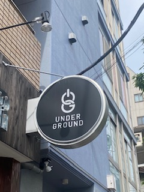

路上観察
これらの写真は3枚とも、東京の赤羽で10月11日に家族が撮ってきた写真です。
１．瓦店

今はもう営業されていない瓦店です。
右にはナショナル瓦と書かれています。
これは昔、松下電器が使っていたブランド名のナショナルのことらしく、昭和時代のものになります。
セキスイU瓦、クボタコロニアルというのも昔の商品です。
２．クラフトビールバー

クラフトビール専門のバーです。
UnderGroundのUとGを組み合わせた看板で、今時の看板という印象を受けました。
３．焼肉店

焼肉店です。
ビルに大きく店名が書かれていて存在感があって面白いと思った。
これだと人の目にも留まりやすくて効果があるのかなと考えました。